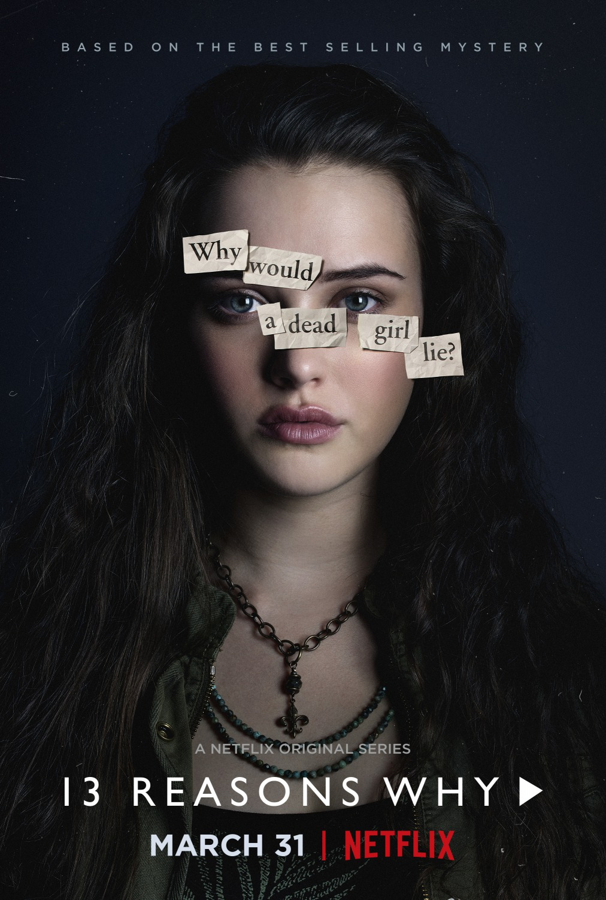
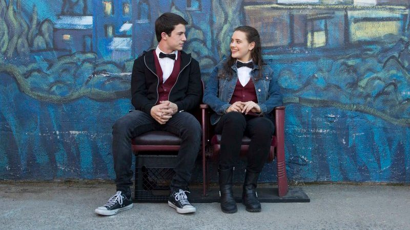
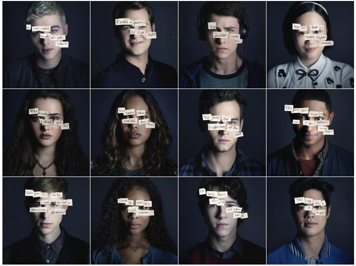
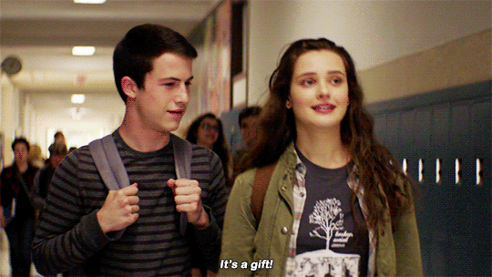

Vannak az izgalmas, érdekfeszítő és megrendítő sorozatok. De kevés mondhatja el mindezt egyszerre magáról, még egy tényező mellett: hogy fontos.
Annak ellenére, hogy a mai tinédzserkorosztályra a szórakoztató ipar egy igen jelentős része épül a zenéktől kezdve a könyveken át a filmekig és rendszerint az ő igényeiket próbálják kielégíteni, nem igazán lehetne elmondani, hogy cikkeken kívül sokat foglalkoznának az őket érintő problémákkal. Persze ez valahol a 22-es csapdája, hiszen ahhoz, hogy autentikusan lehessen ábrázolni ezt a fiatal közeget, ahhoz benne kellene élni, azt a korosztályt kellene képviselni, akik éppen ekkor tanulják meg, hogy hogyan tudnak érvényesülni az életben, valamint ekkor néznek szembe saját érzelmeikkel, vagy a moralitással először, és amit végköveztetésként levonnak, később az egész életüket, a személyiségüket is meghatározhatja. Mindemellett a technika rohamos fejlődésének "köszönhetően" a kommunikációjuk is egyre nehezebben érthető, egyre jobban elszigetelődnek akár a pár évvel idősebb korosztálytól (nem kell feltétlenül a szülőkre, tanárokra gondolni) és maguknak kell megoldást találniuk a problémáikra. Sajnos van, hogy ez nem sikerül.

Jay Asher azonos című könyvére még 2008-ban egy bizonyos Selena Gomez anyukája figyelt fel, majd ezt követően maga a popsztár sokáig tárgyalt a jogokról és a főszerepről, de végül nagy bölcsen belátták, hogy a téma komolysága többet érdemel egy játékfilmnél, ahogy azt sem tartották szerencsésnek, hogy a Gomez-t övező sztárkultusz elvonja a figyelmet a főszereplő Hannah-ról. A Tizenhárom okom volt ugyanis a gimnazista lány öngyilkosságához vezető utat mutatja be, aki ennek okait magnókazettákra mondja fel, amelyek minden oldalán az okok mellett egy személyt is megnevez, a kazetták pedig közöttük vándorolnak. A kazetták az ő egykori legjobb barátjánál, Clay-nél kötnek ki, aki a többiekkel ellentétben a saját, fájdalmasan lassú tempójában képes haladni csak vele.

A szériában okkal látta meg a Netflix a potenciált: friss, aktuális, megrázó, mindamellett a tematikája is adja magát egy sorozathoz. 13 ok, 13 rész. Nem lehetne persze azt mondani, hogy itt-ott nem érződik a koncepció felduzzasztása, vagy még inkább kitöltése, mégis a sorozat nézeti magát, már csak azért is, mivel számos elemében a klasszikus krimiket idézi. Nyilván nem azon van a hangsúly, hogy ki tette, hiszen ez esetben ez teljesen nyilvánvaló, hanem hogy ki milyen részben járult hozzá ahhoz, hogy egy kedves, életrevaló lány annyira kétségbeessen, hogy az ne lásson más megoldást, mint eldobni magától az életét.
Ezzel együtt a széria előrehaladtával nem csak az olyan témák kerülnek előtérbe, mint a (cyber)bullying, alkoholizmus, szexuális zaklatás, az iskolai hierarchia, valamint bürokrácia - mindezt a didaktikusság legkisebb jele nélkül - hanem a kezdetben típusfiguráknak tűnő diákokról is szép fokozatosan lemállik a máz. Van, aki hiába a suli sztárja, otthon komoly gondokkal küzd, van, akit a saját szülei (vélt) elvárásai csapdájában vergődik és van, aki az alkoholba menekül, és az otthonról magukkal hozott válaszaik pont olajat öntenek arra a tűzre, ami Hannah egyre növekvő kétségbeesését és elszigetelődését táplálja.

Viszont ez nem jelenti azt, hogy címszereplője makulátlan lenne, éppen ezért sem értem a Hannahval szemben állított kritikákat: a sorozat pont arról szól, hogy ő hogyan éli meg mindazt, ami társainak, vagy akár a nézőnek nem hat annyira lényegesnek és ezt számtalanszor meg is jegyzik. Ez az ő története, az ő igazsága, ami viszont nem jelenti azt, hogy minden ízében megbízható, amit állít, vagy hogy a társai ezt ugyanúgy élték meg, mint ő. Az ilyenkor felcsendülő kritikus hangok azt is elfelejtik, hogy a sorozat szereplői még tinédzserek, akik sem érzelmileg, sem értelmileg, sem pedig morálisan nem fejlődtek még ki teljesen, hiába mondható el a hierarchikus rendszerük működéséről, hogy ugyanúgy épül fel, mint a felnőtteké, vagy bizonyos problémákat jobban átlátnak náluk. Másrészt hiába látjuk a múltat Hannah, a jelent pedig Clay szemén keresztül, részben kívülállók maradunk, ami szükséges ahhoz, hogy a sorozat minden aspektusát megértsük, ezzel együtt pedig azokról beszéljünk.
A Tizenhárom okom volt kétségkívül legnagyobb erénye pedig ez: párbeszédet generál olyan témákról, amelyek ott vannak a mindennapjainkban, mégis inkább a szőnyeg alá söpörjük őket, ami viszont azt eredményezheti, hogy akármikor megtörténhet a baj (nagyon ügyesen a felnőttek felelősségét sem hallgatják el mindebben), mindamellett érdekes, izgalmas, hovatovább szerethető karakterekkel teszi mindezt. A Netflixre jellemző maximalizmust és minőséget most sem csak a szokásosan magas technika színvonalon kell keresni (a múlt és a jelen elválasztása a meleg és hideg színekkel, valamint Clay sebhhelyének szimbolikájával ízlésesre sikerült), hanem a remek castingban is, ami az ilyen fiatal színészek esetében már egy esetben is kész csodaszámba megy, itt viszont egy egész stábot sikerült verbuválni tehetséges fiatalokból. Nyilvánvalóan a két főszereplőt alakító színészeken állt vagy bukott nagyon sok minden, de ellehet mondani, hogy abszolút telitalálat lett mindkét részről. A szinte teljesen újonc Katherine Langford ügyesen, érzelmekkel telítve vezet végig minket egy rettentő komplex és nagyon szomorú lelki folyamaton, utolsó nagyjelenete pedig szívszorító és megrázó. A nálunk is ismert Dylan Minette (Vaksötét, Libabőr, Fogságban) remek az elfolytásokkal teli kívülállóként és a széria erkölcsi iránytűjeként, de a többi fiatalnak is megvannak a maguk kisebb-nagyobb pillanatai (leszámítva a Tony-t alakító Christian Navarro-t, ő valóban gyenge láncszem), a felnőttek közül pedig egyedül Kate Walshnak jut érdemi szerep, de ő ezúttal is maximálisan meghálálja.

Témájából adódóan nem csoda, hogy heves vitákat váltott ki a sorozat, és míg az egyik oldal szerint propagálja az öngyilkosságot, mint megoldást (a végeredményt látva abszolút kijelenthető, hogy ez nincs így), a másik oldal azonnal piedesztálra emelte és sokan máris kötelező tananyaggá tennék az iskolákban. Nem is csoda, hogy már bejelentették a második évadot, ahogy az sem - és ez a széria kevés érdemi hibájának az egyike - hogy a finálé rengeteg szálat vet fel, amelyek nem kapnak érdemi lezárást, így a befejezés is kissé lóg a levegőben. Utóbbi mindezek ellenére sokkalta relevánsabb, mint a Netflix másik tavalyi üdvöskéjének, a Stranger Thingsnek a hirtelen, semmiből előkapott szálai, hiszen ahogy a sorozat fontos eleme a folyamatábrázolás, úgy egyértelműen nem lehetett minden végére pontot tenni és a megpedzegetett iskolai lövöldözés témája legalább annyira súlyos és drasztikus kérdéskör az USA-ban, mint az öngyilkosság. Éppen ezen okok megértése miatt is - amelyek 13-nál lényegesen túlmutatnak - megkerülhetetlen szériával gazdagodtunk, amely a norvégok SKAM-jához hasonlóan a tinédzser lelkület megértését is szolgálja, viszont annak hétköznapi ábrázolása helyett mer mélyebbre ásni, és szerencsére tud is, méghozzá rendkívül ijesztő mélységekig.